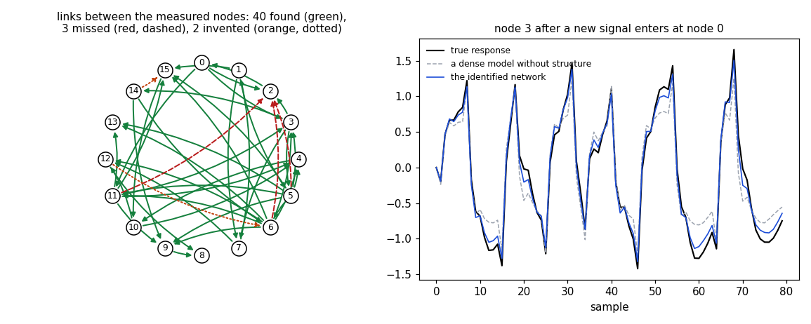

network-id-confounded
Dynamic network identification · open 0 of 4 agent attempts pass
more
The submitted function is called once per hidden network with a 400-sample record of the 11-18 measured nodes of a 15-20 node network; 2 to 4 hubs are unmeasured, carry strong process noise, drive two or more measured nodes each and close feedback loops that are not seen; every measured node carries a known excitation. It returns the direct links among the measured nodes (links through unmeasured nodes count: the immersed network) and the response to six new excitation signals. Gate near_oracle_2x on 0.9 of the networks: link F1 >= 0.8 and a response error within a factor two of the privileged reference (least squares with the true structure and a sensor on every node, times 1.27, the frozen median penalty of a maximum-likelihood fit that knows the structure but sees only the measured nodes; that fit itself is within the factor on 95 % of 40 reference networks). The difficulty is structural, not a matter of tuning: measured nodes that share an unmeasured cause are selected as regressors of each other (links that do not exist) and thereby hide the links that do (from the measured in-neighbours of the unmeasured node); about half of the true links run through an unmeasured node. On 40 fresh networks: dense VARX never clears beats_dense; group-sparse VARX with cross-validated size: topology_0p8 on 28 %, gate 0 %; per-node stepwise selection with hyperparameters searched on 30 sampled networks: topology_0p8 on 38-57 %, gate 0 %, response error 12-17 times the reference; a per-node procedure with an excitation test for proxies (the solution until 2026-11-23): topology_0p8 on 62 %, gate 5 %, error 10 times the reference. The solution shipped since then (structural EM with the unmeasured hubs as latent nodes, exact likelihood, search on the criterion of the whole model) reaches topology_0p8 on 95-99 % and the gate on 40-51 % of fresh networks, with a median error 2.1-2.5 times the reference. The reference is attainable from the measured record once the structure, the unmeasured hubs included, is given; whether the structure can be found from 400 samples well enough for 0.9 is doubtful: in that search's diagnosis the links the record says least about are the measured parents of the unmeasured hubs, one missing or false parent moves the response error by a factor of two to four, and a search started at the true structure under the same criterion stays near 0.7.
Gate. per-seed success is the `near_oracle_2x` rung of this benchmark's ladder ['predicts', 'beats_dense', 'topology_0p8', 'near_oracle_2x', 'near_oracle_1p3x'] (`--success-mode near_oracle_2x`), not the evaluator's default flag; the task is solved when the success rate over the grader's held-out seeds is `>= 0.9`
Axes: plant:network_id, scenario:confounded_v1, gate:near_oracle_2x, track:identification, unmeasured:2-4, open:by-construction
Each video or figure re-runs the attempt's final controller through the task's own evaluator on a public seed (never the grader's held-out ones). The table under each one is the official grade on the held-out seeds.

confounded_v1| criterion | graded | needed |
|---|---|---|
| base:near_oracle_2x | 0.275 | ≥ 0.900 |
The agent's final message
The submission does not reach the gate: `/app/work/controller.py` passes `near_oracle_2x` on roughly 30–40% of networks, against the required 90%. It is a valid, working procedure, but as graded it would score zero. Results with the final settings: | Seeds | `near_oracle_2x` | `topology_0p8` | `beats_dense` | Max CPU | | --- | --- | --- | --- | --- | | Evaluator, 0–19 | 6/20 | 19/20 | 20/20 | 4.7 s | | My development set, 1000–1039 | 16/40 | — | — | 4.8 s | The 0–19 row was run on a build that differs from the delivered file only by an unused function and docstrings. The delivered file itself was run on seeds 0–9 (4/10, all valid, max CPU 4.6 s). **What the procedure does** - **Measured equations:** each measured node gets a sparse equation on the lagged signals of the other measured nodes. - **Latent hubs:** pairs of nodes with correlated residuals propose an unmeasured node. Its signal is estimated by a smoother inside an EM loop, and it is kept only if the BIC of the record improves. - **Clean-up moves:** measured parents of each latent node are searched by likelihood ratio, and a "parent" that is really an early child acting as a proxy is flipped. - **Answer:** the fitted full network, latent nodes included, is simulated for the queries. Hub-parent coefficients are weighted by their BIC evidence rather than a hard in/out decision. **Where it falls short** - **The estimator itself is fine.** Given the true structure, the EM fit matches the reference level (median erro…
Shown: public seed 0 (confounded_v1); this episode passes the near_oracle_2x rung. This episode: response_error 0.0132, reference_error 0.0182, dense_error 0.661, f1 0.969, precision 1, recall 0.939, n_links_true 33, n_links_returned 31, band_coverage 0, band_coverage_hard 0, band_coverage_easy 0, band_width_ratio inf, elapsed_s 2.14, n_measured 17, n_unmeasured 2. Left: the links between the measured nodes that the procedure returned, against the true ones. Right: the response of one node to a new signal, as predicted.
controller.py · trial network-id-confounded__KGB7pdT


confounded_v1| criterion | graded | needed |
|---|---|---|
| base:near_oracle_2x | 0.075 | ≥ 0.900 |
The agent's final message
The submission does not pass the gate: on the official evaluator the controller in `/app/work/controller.py` reaches `near_oracle_2x` on 1 of 20 visible seeds (1/10 on seeds 0–9, 0/10 on seeds 10–19), against the required 0.9. I stopped at 48 of the 60 minutes because nothing I had left to try could close that gap. ## What is in `controller.py` It fits a sparse VARMAX equation per measured node by forward selection, using lagged innovations of other nodes to absorb the shared noise of hidden hubs and a small bank of fixed AR filters to represent paths through them. The response is averaged over five fits with different selection penalties. | Check (official evaluator, `confounded_v1`) | Seeds 0–9 | Seeds 10–19 | | --- | --- | --- | | valid answers | 10/10 | 10/10 | | `predicts`, `beats_dense` | 10/10 | 10/10 | | `topology_0p8` (link F1 ≥ 0.8) | 9/10 | 8/10 | | `near_oracle_2x` (the gate) | 1/10 | 0/10 | | max processor time per network | 4.6 s | 4.1 s | On my own development seeds the median response error is about 3.3–3.9× the reference, where 2× is needed, and about 17–19% of networks pass. The binding constraint is the response error; link F1 averages about 0.86–0.89. ## Why it falls short - **The target is reachable in principle.** An EM fit with explicit hidden nodes, given the true structure, gets about 1.0× the reference (0.8–1.5× over 12 seeds), from a random start as well as from the truth. - **Structure discovery is the gap.** Even when I handed the EM the tru…
Shown: public seed 1 (confounded_v1); this episode fails the near_oracle_2x rung. This episode: response_error 0.0277, reference_error 0.0108, dense_error 0.403, f1 0.941, precision 0.952, recall 0.93, n_links_true 43, n_links_returned 42, band_coverage 0, band_coverage_hard 0, band_coverage_easy 0, band_width_ratio inf, elapsed_s 1.79, n_measured 16, n_unmeasured 2. It was the first failing one of 2 public seeds tried. Left: the links between the measured nodes that the procedure returned, against the true ones. Right: the response of one node to a new signal, as predicted.
controller.py · trial network-id-confounded__7ZnTPgF